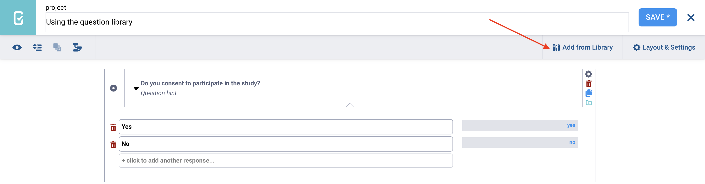
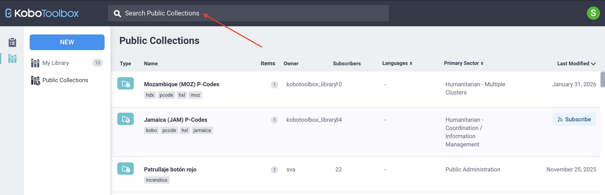

Search the knowledge base, browse our resources, and visit our forum for more detailed information
Last updated: 20 Mar 2026
Public collections allow KoboToolbox users to share and reuse predefined survey questions, question blocks, and full templates. When a collection is made public, it becomes available to all users on the same KoboToolbox server. Public collections may include commonly used questions or question groups, such as demographic characteristics or other standard indicators.
By making content public, users contribute to a shared library that helps standardize surveys and promote widely used measures across the Kobo community.
This article explains how to locate, use, and create public collections in the KoboToolbox library.
To learn more about the KoboToolbox library, see Using the KoboToolbox question library.
To access public collections from your KoboToolbox account:
Click the Library icon in the left-side menu.
Open the Public Collections tab.

You will see a list of all public collections available on your server, as well as the collection owner, number of items, number of subscribers, available languages, primary sector, and date last modified.
Note: Public collections on the Global KoboToolbox Server and the European Union KoboToolbox Server may differ. Collections added to one server are only accessible from that same server.
To find a specific collection, you can browse the list, sort or filter the results, or use the search bar to enter keywords.
To create a public collection, you must first create a collection in your question library. From the question library:
Click NEW and select Collection.
Enter a name, short description, organization, primary sector, and country. These fields are required to make a collection public.
Click Create.
Add at least one asset from your library to the collection.
Open the collection and click Make public.

To learn more about creating collections in your library, see Using the KoboToolbox question library.
To use assets from public collections in your own forms or projects, you can subscribe to collections, retrieve individual assets, or create new projects from public templates.
Subscribing to a public collection adds it to My Library, allowing you to easily access and use its questions, blocks, or templates in your own forms.
To subscribe to a public collection:
Hover over the collection and click SUBSCRIBE on the right, or
Open the collection and click SUBSCRIBE in the detail view.

To remove a collection from your library, click UNSUBSCRIBE.
If you do not want to subscribe to an entire public collection but only need specific assets, you can clone or download them individually. To do so:
Open the collection that contains the asset you are interested in.
Hover over the asset.
Click Clone to add it to your library, or select More actions to download it as an XLS or XML file.
After adding questions from a public collection to your library, either by subscribing to the collection or cloning individual assets, you can reuse them in future forms from the Formbuilder.
Note: Only questions that have been added to My Library can be inserted into your forms using the Formbuilder.
To use questions or question blocks from a public collection in your form:
Open the KoboToolbox Formbuilder.
Click Add from Library in the top right corner.
Select the question or question block you want to add, then drag and drop it into the desired location in your form.
If your question library contains many items, you can use the Search function to quickly locate the question or block you need.

Note: When you add a question from your question library to a form, any changes you make in the form will not affect the original version saved in the library.
You can also use a template from a public collection to create a new form project, either from your question library or from the Projects home page.
From the question library
You can create a project from a template in My Library if you have subscribed to the collection, or directly from Public Collections:
Open the public collection.
Hover over the template.
Click Create project on the right.
Enter a name for the new project.

Note: You can create a project from a template in a public collection even if you have not subscribed to the public collection.
From the Projects home page
You can also create a project from a public template directly from the Projects home page, provided you have subscribed to the collection:
Click NEW and select Use a template.
Choose a saved template and click Next.
Enter the project details and click Create project.
In both cases, a new KoboToolbox project will be created that you can edit and deploy.
Note: Editing a project created from a template does not modify the original template.
Within Public Collections, the search bar supports both simple and advanced queries. By default, if you enter a keyword without specifying a field, the system searches across multiple fields, including the name, owner username, description, question labels, tags, and UID. Searches are case-insensitive by default.

If you want to narrow your results or search for specific fields within public collections, you can use the advanced search options described below.
Advanced search uses a structured format: field__subfield__operator:value.
The field or field__subfield prefix defines the field you are searching (e.g., the collection name).
The operator suffix defines how the value is matched.
Note: Use a double underscore to separate each element.
Examples of prefixes include:
Prefix |
Field being searched |
|---|---|
|
Name of the survey, collection, question, block, or template |
|
Username of the asset owner |
|
Description field |
|
Question labels and available languages |
|
Assigned tags |
|
Unique identifier (UID) of the object |
|
Nested settings field, such as country value |
Examples of suffixes include:
Suffix |
Value type |
Description |
|---|---|---|
|
Text |
Exact match (case-sensitive) |
|
Text |
Field contains the value (case-sensitive) |
|
Text |
Field starts with the value (case-sensitive) |
|
Text |
Exact match (case-insensitive) |
|
Text |
Contains match (case-sensitive) |
|
Text |
Starts with match (case-sensitive) |
|
Numeric |
Exact number |
|
Numeric |
Less than |
|
Numeric |
Less than or equal to |
|
Numeric |
Greater than |
|
Numeric |
Greater than or equal to |
For example, owner__username__icontains:team searches for public collections where the owner’s username contains the word “team”, regardless of capitalization.
Note: If no suffix is added, exact is used by default. Adding i before a text operator makes it case-insensitive.
You can combine filters using AND, OR, and NOT for more precise results.
For example, owner__username__icontains:team AND tags__name__icontains:baseline searches within the owner username field and the tags field.
Did you find what you were looking for? Was the information clear? Was anything missing?
Share your feedback to help us improve this article!